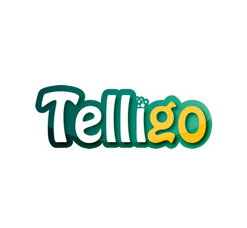
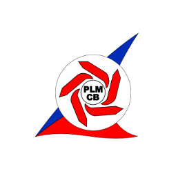

Formation
Etudes Supérieures

2014-2015 (en cours)
Dernière année en Maîtrise d'Informatique à l'UQAC dans le but d'obtenir un double diplôme.
Cryptographie, conceptions de jeux vidéos, architectures parrallèles...
2012-2014:
Première et deuxième année du cycle ingénieur (option systèmes embarqués) à l'ISEN de Brest
Statistiques, traitement du signal, codage canal, informatique, réseaux...
2010-2012:
Première et deuxième année de prépa intégrée MPSI (Mathématiques, Physique et Sciences de l'ingénieur) à l'ISEN Brest.
Lycée
2009-2010:
Baccalauréat S Mention Assez Bien (spécialité physique-chimie) à Laval (53)
Compétences
| Langages de programmation | Electronique | Technologies Web | Langues |
| C C++ Java Assembleur Bash |
VHDL Protel DXP |
HTML CSS SQL |
Anglais Français |
Logiciels:
- IDE (Integrated development environment): CodeBlocks, jGRASP, Eclipse, Keil, Sublime Text
- VHDL et SoPC: Quartus, Modelsim, Qsys
- MatLab et Scilab
- gestion de version: Git
- Microsoft Office et Libre Office
Expériences professionnelles et associatives
Août 2014: Animateur en colonie de vacances Telligo

Animation d'un groupe d'une cinquantaine de jeune âgés de 12 à 17 ans. Mise en place de grands jeux, de veillés... Préparation et mise en ouevres d'activités axées sur le développement informatique et le jeu vidéo ....
Juillet 2014: Animateur en centre de loisirs à Brest

Encadrement et prise en charge de groupes d'enfants âgés de 3 à 13 ans. Mise en place de grands jeux, d'activités manuelles et sportives, de sorties à la plage...
Eté 2013: opérateur machine, usine Paulstra
Stage ouvrier d'une durée d'un mois au sein du service prototye de l'usine Paulstra de Segré (49).
Ce site s'occupait de la production de joints en cahoutchouc. Lors de ce stage j'ai pu passer sur différentes machines de productions et ainsi apprendre en quoi consitait le métier d'opérateur.
Eté 2013: Woofing en Irlande
Durant notre scolarité au sein de l'Isen il nous est demandé de passer un mois dans un pays étranger.
Septembre 2012 - juin 2014: membre et trésorier du Club Elec

Voici quelques tâches réalisées au sein de cette association:
- réparations électroniques et informatiques
- création de projets (jeux avec réalité augmentée, drone, borne d'arcade...)
- mise en place de cours complémentaire à la formation de l'Isen
- mise en place d'événements tels que les LANs
- assemblage d'une imprimante 3D RepRapPro
page facebook du club
Eté 2011 et 2012: Animateur au centre de loisirs de Cossé-Le-Vivien

Encadrement et prise en charge de groupes d'enfants âgés de 3 à 13 ans. Mise en place de grands jeux inter-centres, de veillés..
Janvier 2009 - Juin 2009: Correspondant local de Presse

A l'occasion du projet "initiatives solidaires" le quotidien Ouest-France proposait à des jeunes d'écrire des articles à la façon d'un pigiste. C'est ainsi que j'ai rédigé quelques articles pour la rédaction de Laval pendant six mois.
Loisirs
Athlétisme
D'abord en UGSEL avec le collège et le lycée puis en tant que licencié au club de l'AGCV (depuis 5 ans).
Bricolage
Création de petits projets électronique et/ou informatique ...
Autres sports
Natation et vélo